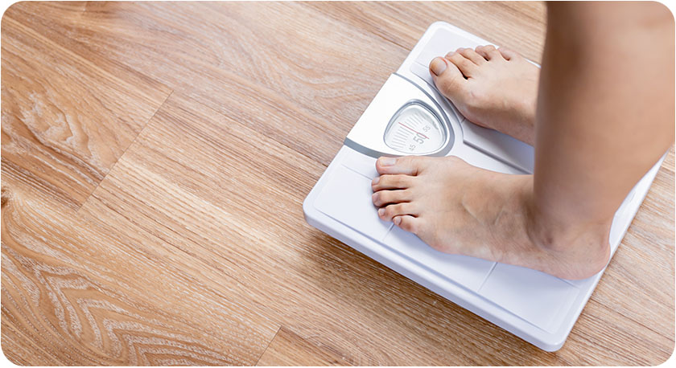

Quando falamos nisso, a primeira coisa que vem em nossa mente, é a preocupação na parte da estética corporal. Muitas pessoas se preocupam com coisas como: "...o verão está chegando e eu queria tanto ir para a praia de maio ou biquíni..." ou: "...se eu tivesse uma barriga como a de "fulano", acho que chamaria muito mais atenção..."
Dietas milagrosas, jejuns mirabolantes, planos de exercícios físicos exaustivos... são um incontável número de métodos e planos para emagrecer, o que está fazendo com que muita gente se sinta perdida em meio a tanta informação. Diversos estudos focados no objetivo de queimar a Gordura localizada são desenvolvidos continuamente, mas um estudo em específico vem chamando a atenção da comunidade de pessoas que buscam por alternativas para baixar o peso...
Neste ano de 2022 um estudo foi publicado pela Nature Medicine com 52.000 mulheres e homens, o maior já feito com seres humanos e, este estudo encontrou apenas um fator comum em cada homem e mulher com excesso de peso: Baixos níveis de tecido adiposo marrom! O que ficou claro é que a “boa gordura”, ou seja, a gordura marrom, pode queimar até 300 vezes mais calorias do que qualquer outra célula em seu corpo (https://www.nature.com/articles/s41591-020-1126-7)
Os Ingredientes Naturais que ajudam Emagrecer
Então, sabendo disto é que estudos foram feitos e identificaram-se ingredientes naturais que utilizados em sua receita diária podem fazer que a gordura marrom existente em seu corpo seja muito mais otimizada para ajudar em queimar calorias.
Classificação do IMC:
Menor que 18,5 – Abaixo do peso
Entre 18,5 e 24,9 – Peso normal
Entre 25 e 29,9 – Sobrepeso (acima do peso desejado)
Igual ou acima de 30 – Obesidade
Clique no botão abaixo para continuar
Termos de Uso I Política de Privacidade
CNPJ 44.082.176/0001-05 ©2022 – Todos os direitos reservados.